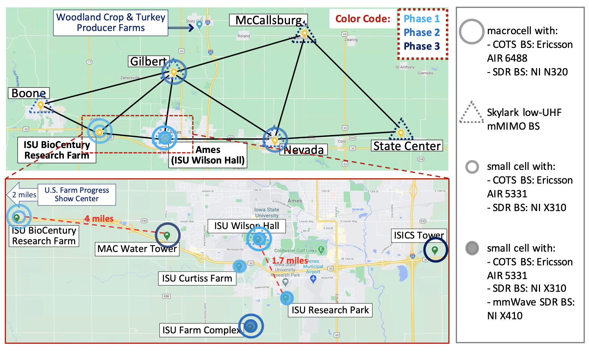
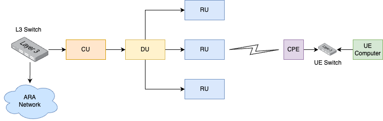
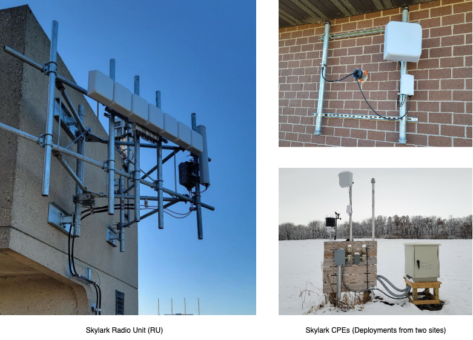

ARA Infrastructure Overview
In the summary section, we discussed that ARA is furnished with a comprehensive assortment of wireless equipment, supporting a wide range of wireless technologies. On the access network side, known as AraRAN, the testbed comprises Software Defined Radios (SDRs) and Commercial-Off-The-Shelf (COTS) platforms functioning in frequencies from low-UHF to millimeter wave (mmWave). Apart from RAN, ARA offers a wireless backhaul among the sites utilizing high-capacity Free Space Optical (FSO) links, mmWave, and microwave links.
Wireless Access Network
The Wireless Access Network component of ARA, named AraRAN, encompasses various wireless technologies deployed around Ames, Iowa at specific locations. Key AraRAN components include:
NI SDR Base Stations (BS) and User Equipment (UE)
Skylark Base Station and Customer Premises Equipment (CPE)
Ericsson Base Stations and User Equipment
NI SDR Base Stations and User Equipment
AraRAN incorporates Software Defined Radio (SDR) based Base Stations (BS) implemented using NI USRP N320. The BSs are set up at four locations: (1) Wilson Hall, (2) Curtiss Farm, (3) Agronomy Farm, and (4) Research Park. The SDRs are linked to Tower Mounted Boosters (TMBs) composed of power amplifiers and low noise amplifiers, supporting n77 TDD. The connection uses low attenuation AVA5-50 RF cables from CommScope. The TMB is connected to a CommScope antenna via LMR400 jumper cables. The radios and front-ends operate within the 3400–3600 MHz frequency band. Each BS is furnished with three sectors, with three USRP N320s connected to a single COTS server. That is, three concurrent experiments can be carried out at each base station using virtualization through Docker containers running the 5G stack. The equipment’s detailed specifications mentioned above are highlighted below. The SDRs are connected to Dell servers via high-speed 10G SFP+ interfaces.
In addition to BSs, the User Equipment in AraRAN is realized using NI USRP B210 radios. The UEs are dispersed across Ames in different regions, including Central Ames, Curtiss Farm, Kitchen Farm, and Agronomy Farm for both agricultural and commercial use cases. This offers the experimenter an opportunity to conduct practical experiments. The UEs are equipped with software-defined radios from National Instrument and corresponding RF front-ends. The USRPs have board-mounted GPSDO for synchronization purposes and are connected to a COTs server to support experimentation. Our UEs are also furnished with NI B205 USRPs for spectrum monitoring purposes. Currently, our UE provides Internet connectivity support to real users around the city of Ames.
Detailed specifications of SDR BS and UE are provided here.
Skylark Base Station and Customer Premises Equipment
The Skylark base station of AraRAN consists of three components: Central Units (CU), Distributed Units (DUs), and Radio Units (RUs). In the downlink, CU connects to the DU, which in turn connects to the RU. Conversely, CU connects to a Layer-3 (L3) switch that acts as the gateway.
The customer premises equipment is outfitted with a single Gigabit Ethernet port, enabling connection to the Power over Ethernet (PoE) switch. The switch supplies power and network connectivity to the CPE. A computer is connected to the switch, which is in the same VLAN as the CPE. The computer receives an IP address from the L3 switch at the BS, while the link from CPE to RU-DU-CU operates as an L2 link. The logical diagram of the Skylark deployment is provided below.
In Phase-1, ARA features a single Skylark BS deployed at Wilson Hall. The image below illustrates the field deployment snapshot of the Skylark BS. Five additional BSs are planned for subsequent phases. Regarding CPEs, ARA deploys 22 CPEs in Phase-1, distributed across different regions around Ames.
Phase-1 envisions 22 CPEs connecting to the Skylark BS. There are 3x RUs at the BS, each covering a sector of 120 degrees. The three RUs are connected to the DU, which in turn is connected to the CU. As mentioned earlier, each UE computer deployed in the field with an attached CPE receives an IP address from the L3 switch connected to the CU at the BS.
The ARA Resource Specification offers a detailed specification of Skylark.
Backhaul Network
The backhaul network in ARA, referred to as AraHaul, comprises long-range wireless and free space optical links, along with traditional optical fiber.
Micro and Millimeter Wave Backhaul
For AraHaul, Aviat WTM 4800 radios are used for long-range micro and millimeter wireless links, connecting different base station sites. In Phase-1, a backhaul wireless link is established between Wilson Hall and Agronomy Farm. The wireless link utilizes microwave (11 GHz) and mmWave (80 GHz) frequency bands. The WTM 4800 radios are equipped with one or two transceivers configured for various operational modes, including single transceiver single-band, dual-transceiver single-band, and dual transceiver multi-band. A detailed specification of Aviat radios is described here.
Free Space Optical Backhaul
In parallel with the mmWave and microwave Aviat link, AraHaul establishes a long-range free space optical communication link. The link is implemented using custom-made optical telescopes that use a laser of frequency 194THz. In Phase-1, the optical link is established between Wilson Hall and Agronomy Farm.
Fiber Backhaul
The ARA wired backhaul network is divided into two parts: (1) data network and (2) management network. The data center and the four field sites are connected via both data and management networks. The network connectivity is established using two types of switches for each network type, meaning each site is equipped with separate switches for managing data and management networks.
At the data center, Juniper ACX 7100 is used as the data switch, while field-deployed BS sites utilize Juniper ACX 710. For the management network, Cisco 9300 is employed at the data center, and Cisco 3850 is used at field-deployed BS sites. The four field-deployed BS sites have point-to-point connectivity with the data center via 100G/40G fiber cables. Each switch (data/management) serves as a gateway for local networks connected to devices such as servers and radios. The Open Shortest Path
At the data center, a Juniper ACX 7100 switch is used for the data network, while the field-deployed BS sites employ Juniper ACX 710 switches. For the management network, a Cisco 9300 switch is utilized at the data center, and Cisco 3850 switches are used at the field-deployed BS sites. The four field-deployed BS sites maintain point-to-point connectivity with the data center through 100G/40G fiber cables. Each switch (data/management) functions as a gateway for local networks connected to devices such as servers and radios. The Open Shortest Path First (OSPF) routing protocol is employed between the switches to ensure network reachability.
Compute
In addition to the compute resources available at the BS or UE computers deployed on-site, ARA is furnished with two high-performance compute nodes at the data center. The dedicated compute nodes are realized using Dell PowerEdge R750 servers, equipped with Intel(R) Xeon(R) Gold 63xx CPUs, 384 GB of memory, and 1.92 TB of storage space.
Storage
Like the compute resources, ARA offers users an object storage service for the permanent storage of data. To implement the object storage, two dedicated Dell PowerEdge R750 storage servers are used, featuring Intel(R) Xeon(R) Gold 5317 processors, 128 GB memory, and 14.6 TB of storage. The disks are configured with RAID 5 for redundancy and fault resilience.